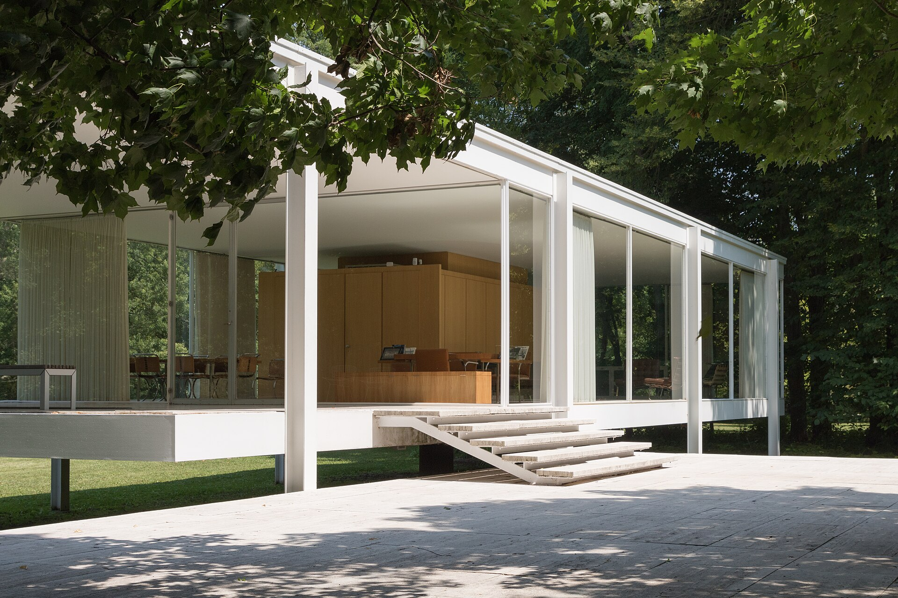

Seoga.
11월에는 공간을 읽습니다.가상의 독립서점과 창작 도서로 구성한 시안
실제 매장·판매 도서가 아닙니다.
이달의 두 권
집의 바깥에서,
나의 안쪽으로.
어떤 집은 풍경을 바꾸고,
어떤 길은 생각을 바꿉니다.
익숙한 장소를 새롭게 읽는 두 가지 방법.
집의 바깥공간 기록 · 느린 서가 편집실 벽과 창 너머, 풍경이 되는 집을 바라봅니다. 소개 읽기소개 접기
집은 어디까지일까요. 벽이 끝나는 곳일 수도, 창으로 보이는 나무까지일 수도 있습니다. 건물의 외형보다 그 주변에 남겨진 공간을 따라 읽는 가상의 사진집입니다.
표지 사진의 판스워스 하우스는 미스 반 데어 로에가 설계한 실제 건축물입니다. 이 시안의 서점이나 편집실이 설계한 건물이 아닙니다.
시안용 창작 도서입니다. 건축 사진의 출처와 이용 조건은 하단 제작 기록에 표기했습니다.
걷는 시선산책 기록 · 느린 서가 편집실 같은 길에서도 매번 다른 장면을 만납니다. 소개 읽기소개 접기
목적지 없이 걷는 동안 눈에 들어온 것들을 기록합니다. 계단에 드리운 그림자, 나뭇잎 사이로 보이는 창, 누군가 잠시 앉았다 간 자리. 익숙한 길의 낯선 표정을 모은 가상의 산책 기록집입니다.
마음에 드는 페이지를 펼친 뒤 오늘 걸었던 길을 떠올려 보세요. 책갈피 뒤에 작은 장면 하나를 적어 두어도 좋겠습니다.
실제 판매 도서가 아닌 디자인 시안용 창작 도서입니다.

서가의 기록 / 11월
풍경을 들이는 집.
생각을 들이는 책.
건축 사진 한 장을 오래 보고 있으면, 어느새 그곳에서 보낼 시간을 상상하게 됩니다. 이번 달에는 공간을 설명하는 책보다 공간에 머물게 하는 책을 골랐습니다.
서가에서 보내는 시간사진: Paul R. Burley / 판스워스 하우스 / CC BY-SA 4.0 · 표지와 본문에 크롭·색 조정하여 사용. 사진 및 그 편집 표현은 동일 라이선스를 따릅니다. 출처와 제작 기록
방문 안내
읽다 멈춰도 좋은,
당신의 다음 자리.
화–일 12:00–19:00 · 월요일은 쉬어갑니다.
창가에는 책을 읽을 작은 자리가 있습니다.
운영 시간은 시안용 설정이며, 실제 매장 위치나 예약 서비스는 연결하지 않았습니다.